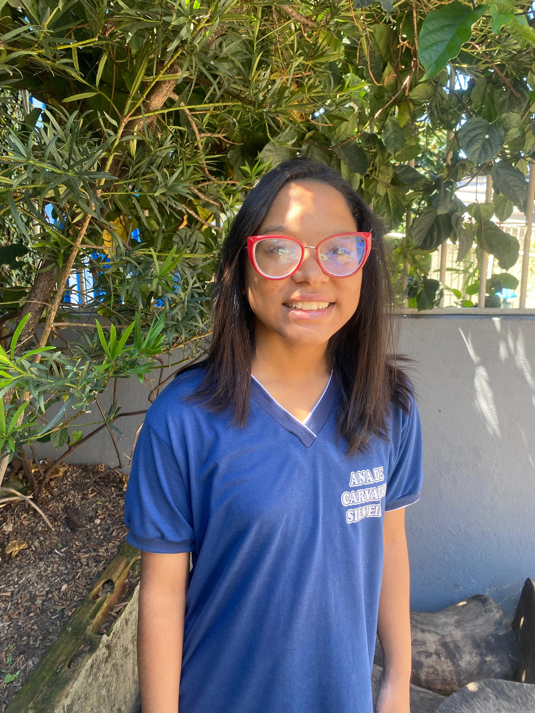

No curso, Rafaela gosta mais de coisas novas das aulas de AMDC, ver as peças que fazem o computador funcionar, o que ela aprendeu no curso foi copiar e colar, navegar na internet, pesquisar no google e digitar. Sua maior dificuldade são as aulas práticas, Sua maior facilidade é pesquisar, usar o teclado e ligar/desligar o computador, ela não tem plena certeza se seguira a carreira mas quando for trabalhar irá usar o básico que aprendeu, o curso irá influenciar porque quando for trabalhar saberá o básico e facilitará na hora de achar um emprego.